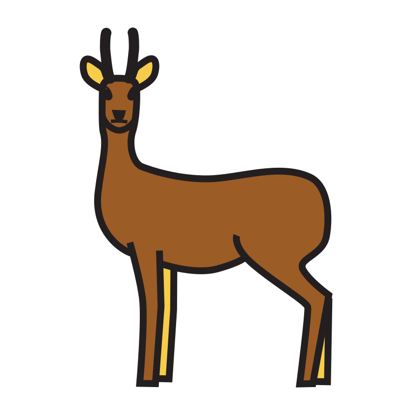

Prénom : Date :
Période 2 · Entraînement A1
Phonologie — rimes
Les rimes de la savane ★ je m’entraîne
Sous-objectif : entendre que deux mots finissent pareil (prépare la fiche d’évaluation 2.3).
Consigne : 1. Nomme les images et relie celles qui riment. 2. Entoure les images qui finissent comme « bateau ». 3. Sur chaque ligne, barre l’image qui ne rime pas avec les deux autres.
1

gâteau

lion

souris

girafe
★ Défi : dis un mot qui rime avec « lion » et un mot qui rime avec « souris ».
entendre et reconnaître une rime.Seul ☐ · Avec aide ☐ · À revoir ☐
Prénom : Date :
Période 2 · Entraînement A2
Lettres — capitales et script
Les lettres du marché ★ je m’entraîne
Sous-objectif : reconnaître les voyelles en capitales et en script (prépare la fiche d’évaluation 2.4).
Consigne : 1. Relie chaque voyelle capitale à la même voyelle en script. 2. Dans chaque bande, entoure toutes les lettres pareilles à celle du début. 3. Repasse le mot, puis copie-le en dessous.
2
ABAMAKADATOASA
ooaoeouooaocoo
3
LION  ZÈBRE
ZÈBRE
★ Défi : trouve les voyelles de ton prénom et compte-les :
associer une lettre capitale et la même lettre en script.Seul ☐ · Avec aide ☐ · À revoir ☐
Prénom : Date :
Période 2 · Entraînement A3
Écriture — tracés
Les herbes de la savane ★ je m’entraîne
Sous-objectif : enchaîner des tracés sans lever le crayon (prépare la fiche d’évaluation 2.5).
Consigne : 1. Repasse les herbes de haut en bas, puis continue-les. 2. Repasse les épines, puis continue-les sans lever ton crayon. 3. Repasse les ponts, puis les coupes, et continue-les. 4. Repasse les petites boucles, puis continue-les.
4Les petites boucles de la trompe.
tracer des lignes, des ponts et des boucles réguliers.Seul ☐ · Avec aide ☐ · À revoir ☐
Prénom : Date :
Période 2 · Entraînement A4
Nombres — jusqu’à 8
Les fruits du marché ★ je m’entraîne
Sous-objectif : associer une quantité jusqu’à 8 et son écriture chiffrée (prépare la fiche d’évaluation 2.7).
Consigne : 1. Compte les fruits et écris le nombre dans la case. 2. Colorie juste autant de fruits que le nombre écrit au début de la ligne. 3. Repasse les chiffres 7 et 8, puis écris-les sur la ligne.
2Je colorie autant de fruits.
★ Défi : montre 8 avec tes doigts de deux façons différentes.
dénombrer jusqu’à 8 ; écrire 7 et 8.Seul ☐ · Avec aide ☐ · À revoir ☐
Prénom : Date :
Période 2 · Entraînement A5
Grandeurs — longueurs
Plus long, plus court ★ je m’entraîne
Sous-objectif : comparer des longueurs et employer « plus long », « plus court » (prépare la fiche d’évaluation 2.9).
Consigne : 1. Colorie la bande la plus longue en rouge et la plus courte en bleu. 2. Range les traits du plus court au plus long : écris 1, 2, 3, 4 dans la dernière case. 3. Entoure l’animal qui a le plus long cou.
★ Défi : avec un bout de laine, trouve qui a le plus long bras de ton groupe.
comparer des longueurs ; ranger du plus court au plus long.Seul ☐ · Avec aide ☐ · À revoir ☐
Prénom : Date :
Période 2 · Entraînement A6
Vocabulaire — les mots de l’Afrique
Dans la valise de Plume ★ je m’entraîne
Sous-objectif : ranger les mots des trois corpus (prépare la fiche d’évaluation 2.1).
Consigne : 1. Nomme chaque image. Entoure en bleu ce qui sert au voyage ou au village, en vert les animaux, en rouge les végétaux. 2. Relie chaque animal à l’endroit où il vit : l’oasis du désert, la savane ou le fleuve.
★ Défi : dis le contraire : l’éléphant est lourd, la plume est… ; il fait chaud dans le désert, la nuit il fait…
nommer les mots des corpus ; les ranger sous un mot-étiquette.Seul ☐ · Avec aide ☐ · À revoir ☐
Prénom : Date :
Période 2 · Entraînement B1
Phonologie — syllabes et rimes
Le jeu des syllabes ★★ je consolide
Sous-objectif : manipuler les syllabes et les rimes (prépare la fiche d’évaluation 2.3).
Consigne : 1. Frappe le mot et écris dans la case le nombre de syllabes. 2. Entoure les images dont le nom commence par « ba » comme banane. Attention aux pièges ! 3. Relie les images qui riment, sans les mots écrits cette fois.
1

hippopotame

rhinocéros

autruche

éléphant

perroquet

singe
★ Défi : dis « hippopotame » sans sa première syllabe. Qu’entends-tu ?
dénombrer les syllabes ; repérer une syllabe d’attaque ; reconnaître des rimes.Seul ☐ · Avec aide ☐ · À revoir ☐
Prénom : Date :
Période 2 · Entraînement B2
Lettres — capitales et script
Les mots de la savane ★★ je consolide
Sous-objectif : lire et écrire des mots en capitales et en script (prépare la fiche d’évaluation 2.4).
Consigne : 1. Sur chaque ligne, entoure le mot pareil au modèle. 2. Écris les voyelles qui manquent. 3. Écris le mot en lettres script sur la ligne, avec l’aide de l’abécédaire de la classe.
1
| lion | loin lion lino |
| zèbre | zèbre brèze zèbe |
| singe | signe singe songe |
2
| U T R U C H E |
| G R F E |
| É L P H N T |
3
GIRAFE

TORTUE
★ Défi : épelle « zèbre » à ton voisin, sans regarder.
discriminer des mots en script ; compléter un mot ; écrire en script.Seul ☐ · Avec aide ☐ · À revoir ☐
Prénom : Date :
Période 2 · Entraînement B3
Écriture — vers la cursive
Les boucles de Plume ★★ je consolide
Sous-objectif : passer des boucles aux lettres e et l (prépare la fiche d’évaluation 2.5).
Consigne : 1. Repasse les petites boucles, puis les grandes, et continue-les. 2. Continue les ponts sans lever ton crayon. 3. Regarde le modèle de la maîtresse et écris chaque ligne en cursive.
1Petites et grandes boucles.
2Les ponts sans lever le crayon.
3J’écris en cursive.
modèle écrit par la maîtresse : e · l · le · elle
★ Défi : écris « elle » trois fois sans lever ton crayon.
enchaîner boucles et ponts ; écrire des lettres cursives liées.Seul ☐ · Avec aide ☐ · À revoir ☐
Prénom : Date :
Période 2 · Entraînement B4
Problèmes — ajouter, retirer
Les paniers du marché ★★ je consolide
Sous-objectif : dessiner pour résoudre un problème (prépare la fiche d’évaluation 2.8).
Consigne : 1. Nils a 4 mangues. Il en achète encore 3 au marché. Combien de mangues a-t-il maintenant ? Dessine, puis écris le nombre. 2. Ana a 8 dattes. Elle en mange 3. Combien lui en reste-t-il ? Dessine, puis écris le nombre. 3. Malik a 8 oranges. Il en donne 2 à Elsa et 2 à Nils. Barre-les, puis écris combien il lui en reste.
★ Défi : Elsa a 2 bananes de plus que Nils, qui en a 3. Combien Elsa a-t-elle de bananes ?
résoudre des problèmes d’ajout et de retrait.Seul ☐ · Avec aide ☐ · À revoir ☐
Prénom : Date :
Période 2 · Entraînement B5
Nombres — doubles et surcomptage
Les doubles du djembé ★★ je consolide
Sous-objectif : calculer sans tout recompter (prépare la fiche d’évaluation 2.7).
Consigne : 1. Compte les coups de djembé des deux côtés et écris combien il y en a en tout. 2. Écris les nombres qui manquent dans la bande. 3. Le djembé a déjà sonné le nombre écrit. Il sonne encore les ronds : combien de coups en tout ?
3Je compte à partir du nombre du djembé.
★ Défi : frappe 4 coups, puis encore 4 : sans compter de nouveau, combien en tout ?
connaître les doubles jusqu’à 8 ; compléter la bande numérique ; surcompter.Seul ☐ · Avec aide ☐ · À revoir ☐
Prénom : Date :
Période 2 · Entraînement B6
Motifs et vivant
Tissus et traces ★★ je consolide
Sous-objectif : transcrire un motif et observer les déplacements (prépare les fiches d’évaluation 2.10 et 2.12).
Consigne : 1. Continue le motif du pagne. 2. Refais le motif des animaux : un carré pour le lion, un rond pour le zèbre. 3. Fais une croix pour dire comment se déplace chaque animal. Un animal peut avoir deux croix.
2Je refais le motif avec des carrés et des ronds.
3
| | court  | saute  | nage  |
|---|
| le singe | | | |
 | l’antilope | | | |
| l’hippopotame | | | |
| l’autruche | | | |
★ Défi : invente un motif avec trois animaux d’Afrique et fais-le continuer à ton voisin.
prolonger et transcrire un motif ; associer un animal et son déplacement.Seul ☐ · Avec aide ☐ · À revoir ☐
Crédits des images
Les illustrations de ce cahier sont des pictogrammes Mulberry Symbols (Paxtoncrafts Charitable Trust, licence CC BY-SA 4.0, mulberrysymbols.org) et des pictogrammes ARASAAC (auteur : Sergio Palao, propriété du Gouvernement d’Aragon, Espagne, licence CC BY-NC-SA, arasaac.org). Merci à leurs auteurs et autrices.
 camion
camion carafe
carafe lit
lit